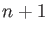

Next: The full NS 2-site Up: The numeric CPMG models Previous: The numeric CPMG models Contents Index
This is the numerical model for 2-site exchange expanded using Maple by Nikolai Skrynnikov. It is selected by setting the model to `NS CPMG 2-site expanded'. The simple constraint pA > pB is used to halve the optimisation space, as both sides of the limit are mirror image spaces.
This model will give the same results as the other numerical solutions whereby R2A0 = R2B0. The following is the set of equations of the expansion used in relax. It has been modified from the original for speed. See the lib.dispersion.ns_cpmg_2site_expanded module for more details including the original code. Further simplifications can be found in the code.
|  |
The relative peak intensities, magnitisation, and effective R2 relaxation rate are calculated as
In these equations CPMG and nCPMG are numpy arrays and hence t139 is also a numpy array. This avoids a Python loop over the dispersion points until the very end of the calculation, required to populate the R2eff data structure, resulting in very fast calculations.
The reference for this model is: